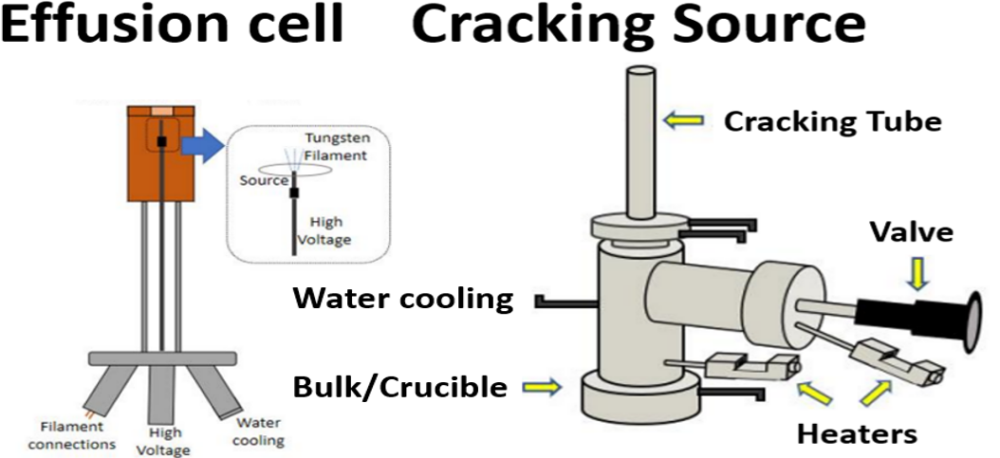

Deposition Techniques
15+ years of experience with deposition processes across research and manufacturing.
- Undergraduate research: thermal evaporation for metal electrodes
- Internships: graphene and CNT growth via CVD
- Graduate research: MBE (monolayer VSe₂), PLD oxides
- Industry: ALD, PECVD, e-beam, sputtering (optics & semiconductors)
Molecular Beam Epitaxy (MBE)

- PVD technique for UHV deposition (10⁻⁹–10⁻¹¹ Torr).
- Multi-stage pumping (ion pump, turbo-molecular pump, roughing pump).
- Highest purity; controlled deposition down to the sub-monolayer regime.
- Max substrate temperature ~500°C; slow rate (few microns per hour).
- Co-deposition or sequential deposition with anneal.
- Common MBE platforms are not designed for mass production.
Effusion Cell and Valved Cracking Tube

Effusion cell
- Typically used for III–V MBE materials.
- Source temperatures can reach high values (tool-dependent).
- Used to deliver stable flux for controlled growth.
Valved cracking source
- For high vapor pressure materials (Se, S, Te, As, P).
- Cracks clusters into atoms to stabilize flux.
- Three temperature-controlled regions are commonly used:
- Bulk/Crucible (~100°C)
- Valve (~250°C)
- Hot-wall cracking tube (>500°C)
E-beam Evaporation

- PVD technique where an electron beam heats the source to evaporate material.
- E-gun generates electrons; magnets focus the beam to the target.
- Rotating crucible stages can accommodate multiple sources.
- Manufacturing-capable thin film deposition.
- Thickness control is strong, but not at the atomic-scale like ALD/MBE.
Atomic Layer Deposition (ALD)

- CVD technique that deposits sequential layers using gas precursors and an inert carrier gas.
- Excellent thickness control due to self-limiting surface chemistry.
- Manufacturing-capable high-quality films.
Example cycle (conceptual)
- Introduce first precursor (e.g., HfCl₄).
- Surface reaction proceeds until saturation (growth self-limits).
- Purge (e.g., N₂) removes excess reactants/byproducts.
ALD continued

- Introduce second precursor (e.g., H₂O).
- Ligand exchange completes the second half-reaction.
- Purge again to remove excess species.
ALD cycle completion

- One full cycle forms ~one layer (chemistry-dependent); repeating cycles builds thickness.
- CVD methods are generally more conformal than PVD (less line-of-sight dependence).
Plasma Enhanced Chemical Vapor Deposition (PECVD)

- CVD process using plasma to provide reaction energy instead of a heater.
- “High-temperature chemistry at lower substrate temperature” (process-dependent).
- Plasma can raise substrate temperature to ~200°C depending on conditions.
- RF power influences film density and stress.
- Manufacturing-friendly: higher deposition rate, higher pressure operation, plasma cleaning.
- CVD is generally more conformal than PVD.